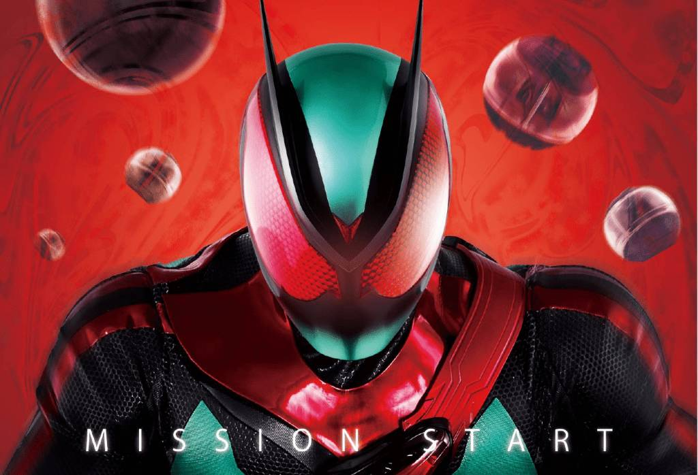
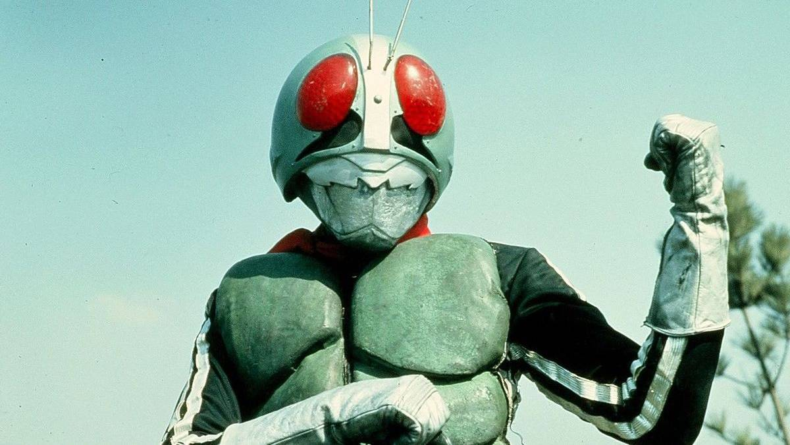

Since the debut of its first installment in 1971.
The Kamen Rider Series has become one of the most brilliant and enduring icons in Japanese Tokusatsu culture and even global popular culture.
It is known for its unique hero imagery, moving stories, and stunning action sequences.
The core concept of the Kamen Rider Series revolves around one or more "Riders":
warriors who are usually cybernetically enhanced or possess special powers.
Their mission is to protect humanity by fighting against evil organizations that seek to destroy the world or commit wicked acts.
These Riders often carry a price or a tragic destiny.
Their powers might even originate from the very evil technology they fight against.
They are not flawless supermen, but rather "lonely heroes who have endured great hardship."
This poignant aspect is precisely the greatest charm of the series.

Kamen Rider 1 (1971)

Heisei era riders phase 1
．"The Motorcycle":
The iconic vehicle of the Kamen Rider, serving not just as transportation but as a crucial partner in battle and a key component of their visual identity.
．"The Transformation":
Accompanied by spectacular effects and thrilling sounds, the hero's transformation from an ordinary person into an armored warrior is
one of the most climactic moments in every series.
．"Cyborg/Reinforced Armor":
Early Riders were often tragic cyborgs, while recent works tend to feature high-tech or magical "reinforced armor."
Regardless of the source, they all represent "power that surpasses human limits."

Kamen Rider Build Motorcycle

Kamen Rider OOO all main forms
While every series adheres to the theme of "justice versus evil," the Kamen Rider Series always keeps pace with the times, exploring deeper social issues:
the Kamen Rider Series always keeps pace with the times, exploring deeper social issues:
．Showa Era (1971–1989):
Focuses on the "tragedy of the cyborg" and the "fight for justice."The style is relatively grim and highly dramatic.
．Heisei Era (2000–2019):
Boldly innovative, each series features unique visual styles and narrative themes,
exploring complex concepts such as "humanity," "memory," "predestined fate," and "rules of the game."
．Reiwa Era (2019–Present):
Incorporates modern elements like advanced technology, AI, and workplace life, continuing to expand the boundaries of Tokusatsu.

Kamen Rider Black vs Shadow Moon

Kamen Rider Gavv Over Mode
Across generations, Kamen Riders continue to fight —
not only against evil, but for hope, justice, and the future.